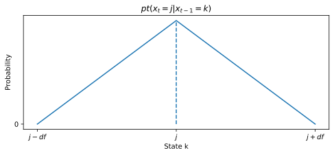
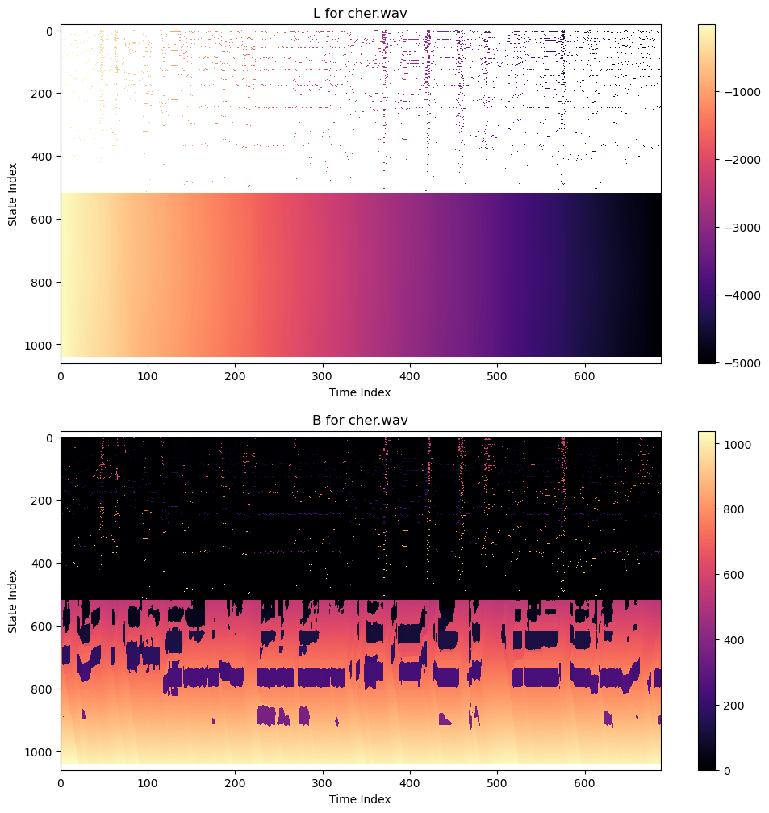
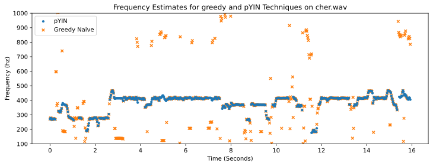

Homework 4: Fundamental Frequency Tracking And Pitch-Based Audio Effects (35 Points)
Chris Tralie
Table of Contents
- Learning Objectives
- Background
- Programming Tasks
The purpose of this assignment is to get students practice with Hidden Markov Models (HMMs) and the Viterbi Algorithm with a fun application involving digital music audio. Students will create a system that uses a Bayesian framework to teach a computer how to listen to the musical notes that a signer is singing. Implementing such a system unlocks a slew of fun applications, such as singing instruments and autotuning effects.
Learning Objectives
- Implement observation probabilities and transition probabilites for a hidden markov model
- Use the viterbi algorithm to estimate a clean sequence of states given outlier observations
- Have fun with some cool audio effects
Background
Digital Audio Fundamentals
Sound is carried by a modulated pressure wave through the air. When it reaches a microphone, the microphone samples the audio by taking measurements of the pressure in regular intervals, and putting them all into one big array of audio samples. A typical sample rate, which we'll use in this assignment, is 44100 samples per second. As an example, let's suppose we have the following clip of Marvin Gaye singing "I Heard It Through The Grapevine" (marvin.wav)
Here's some code we can use to look at a 4410 sample chunk of the above clip, which corresponds to 100 milliseconds of audio
The resulting plot looks like this
In general, the pressure is normalized to the range [-1, 1]. Pressures closer to these limits are perceived as louder to us, so we see the above audio is not as loud as it could be.
Another thing you might notice is that the audio oscillates back and forth in a regular pattern, which is a common occurrence in vibrational systems in nature such as human vocal tracts. As it turns out, humans perceive such periodic signals as a pitch, or a note. The higher the frequency (number of repetitions per second) of the vibration, the higher the note we perceive.
An ideal model of a periodic sound is a pure tune, which can be modeled with a cosine as follows:
\[ y(t) = \cos(2 \pi f t) \]
where f is the frequency in cycles/second (hz), and t is the time in seconds. We can synthesize such a pure tone at 440hz in numpy as follows:
This is "concert A," or the note that orchestras tune to. The resulting audio sounds like this
If we change the frequency to 660hz instead of 440hz, we get the following
As you can hear, since the frequency went up, the note that we perceive also went up in pitch.
In the above, we knew exactly what frequency we were making, but when we're analyzing data, we don't necessarily know this. The problem of fundamental frequency tracking is to estimate the frequency over time in existing audio data. In other words, we're teaching a computer how to listen for notes. In what follows, I will explain some excellent models for doing this in practice.
The YIN Algorithm
The "YIN" algorithm was a breakthrough in fundamental frequency estimation. Click here to see the original 2002 paper on this technique by Alan de Cheveigne´ and Hideki Kawahara. I will give a brief overview of the main idea so you know enough to use the output from this algorithm in the next stage of the assignment.
YIN is like an improved version of autocorrelation for period estimation (for those who may have seen autocorrelation in my music class). The idea is to take a chunk of the signal, called a frame, and to slide the first half of that signal, called the window, past itself in the frame. Then, we compute the sum of the squared differences where the window overlaps with the corresponding chunk in the frame. YIN then does one more step after this, which is to normalize the values so that they are generally in the scale from 0 to 1, and to de-emphasize very small shifts. The animation below shows the process:

What you'll notice is that YIN dips down close to zero every time the signal overlaps well with itself, which happens once every cycle (I've marked these as dots in the bottom plot). We refer to the shifts that happen as the period, which is the length of a cycle, and which is inversely proportional to the frequency. In the above example, the period is 108, which corresponds to a frequency of 44100/108 ≈ 408hz, which is a slightly flat A flat.
Since we're interested in the fundamental frequency over time, YIN keeps moving the frame along in time and redoing this process, returning all of the "troughs" where a min occurs, along with the normalized distance of that trough, referred to as that trough's threshold. Below is code showing how to obtain these troughs in the Marvin Gaye clip using the provided get_yin_freqs method, which returns a list of lists of [frequency, threshold] values over time:
The plot of all of the mins over time looks like this, colored by their threshold value:
Overall, the estimates seem pretty stable. One issue, though, is that YIN returns the fundamental period, but also all integer multiples of the period. In frequency terms, this means we'll see a track of frequencies that seems relatively stable, but we'll see a copy at half the frequency, a copy at 1/3 of the frequency, a copy at 1/4 of the frequency, etc. So it's possible to get confused as to which one is the right one. Also, there are clearly moments where there are a lot of noise in the estimate.
We could be greedy and simply take the frequency with the minimum trough threshold at each time. This is what you'll do in the first task, implementing the naive_freqs method. The code below shows how to get the results and to modulate a cosine to match the estimated frequencies using the method sonify_pure_tone (if you're curious, click here to learn more about how to turn instantaneous frequency estimates into pure tone pitches)
which are as follows:
This is fairly decent, though we see a few outliers.
If, on the other hand, we do the same for vocals from Cher's Believe (cher.wav)
then the YIN estimates are much messier:
And the greedy method has much more noticeable outliers:

The primary goal in this assignment will be to fix this problem and to create much more stable fundamental frequency estimates
The Probabilistic YIN (pYIN) Algorithm
There was an awesome followup paper in 2014 by Matthias Mauch and Simon Dixon called pYIN: A fundamental frequency estimator using probabalistic threshold distributions (click here to read the paper). In a nutshell, the authors add a Hidden Markov Model on top of YIN and use the Viterbi Algorithm to find the best sequence of fundamental frequencies. The effect is to match the estimates from YIN as well as possible (the observation probabilities), but not to let the frequencies jump around too much (the transition probabilities).
I'll now present a slightly simplified* version of pYIN suitable for this assignment:
States
The Viterbi algorithm is specialized to a discrete state space, but the estimated frequencies are real numbers (floats). To deal with this, we'll come up with a discrete set of possible frequencies from some lower limit fmin to some upper limit fmax. Adjacent frequencies are related by a multiplicative ratio known as the spacing (the frequencies get spaced further apart as they increase, because humans perceive pitch logarithmically in frequency). For example, with fmin=100, fmax=2000, spacing=2**(1/120), then the first 10 frequencies would be:
100.0, 100.6, 101.2, 101.7, 102.3, 102.9, 103.5, 104.1, 104.7, 105.3, 105.9, 106.6, 107.2, 107.8, 108.4, 109.1, 109.7, 110.3, 111.0, 111.6, ...
In this example, there would be 520 discrete frequencies states total (each possible note is divided into 10 intervals in this example). In practice, we round the observations to the nearest state, so, for instance, a frequency of 101 would be state index 2 in the above example.
In addition to the K frequency states, there is one more "dummy state" used to refer to unvoiced segments, and we allow ourselves to transition to this state when we're not confident enough about our frequency estimates and/or we think the person might not be singing. So, in total, with the K frequencies and the unvoiced state, there are K+1 states total.
Observation Probabilities
The observation probabilities at each frame are related to the frequency estimates and the thresholds returned from YIN in that frame, as obtained from get_yin_freqs. For example, let's say we ran the following code:
then we would get
In other words, at time 0, there were 3 possible frequency estimate, each with different thresholds. Intuitively, a lower threshold closer to 0 means we're more confident about that frequency. To make turn this idea into a precise observation model, let's suppose there are N frequencies total, indexed as (fi, ti), where fi is a frequency and ti is its corresponding threshold. Let's suppose that j is the state with the nearest frequency to fi. The we let the observation probability for state j be
\[ p_o(j) = 2^{-t_i/\mu} / N \]
where μ is some hyperparameter specified ahead of time; smaller μ values are more strict at requiring lower thresholds.
We also need an observation probability for the unvoiced state. This is simply what's leftover, assuming all possible disjoint observations sum to a probability of 1:
\[ p_o(\text{unvoiced}) = 1 - \sum_{i=1}^N 2^{-t_i/\mu} / N \]
NOTE: When you run the Viterbi algorithm to update accumulated probabilities at time t, you only need to worry about making updates for states corresponding to the N frequencies in all_freqs[t] and the unvoiced state. You can assume that all other frequencies have a probability of 0. This is part of what makes the algorithm efficient in practice.
Transition Probabilities
Finally, we need to specify the probability of transitioning from one frequency state to the next. In all specifications below, ps is the probability of remaining in a frequency state or remaining unvoiced (we take ps=0.9999 in our examples)
Case 1: Frequency To Frequency Transitions
We don't want to allow the frequency estimates to jump around very much, so we will use lower transition probabilities for two adjacent states that are further in frequency. Let the states be in ascending order of frequency. Then, supposing we're at frequency state j, the probability of having transitioned from state k is
\[ pt(x_t = j | x_{t-1} = k) = \left\{ \begin{array}{cc} \frac{p_s}{df} - \frac{p_s|j-k|}{df^2} & k > j-df, k < j+df \\ 0 & \text{otherwise} \end{array} \right\} \]
The image below shows this "triangular weight distribution" (which is what the paper calls it):
NOTE: Transition probabilities outside of this range are 0, so you don't need to consider coming from any k outside of this range. Together with the sparse observations, the limited possible transitions help to keep the algorithm very efficient.
Case 2: Unvoiced State To Frequency State
We also have to consider the frequency of transitioning from the unvoiced state to the frequency state j. We let this be:
\[ pt(x_t = j | x_{t-1} = \text{unvoiced}) = (1-p_s)/K\]
where K is the total number of frequency states.
Case 3: Unvoiced To Unvoiced
Below is the probability of staying unvoiced given that we're unvoiced:
\[ pt(x_t = \text{unvoiced} | x_{t-1} = \text{unvoiced}) = p_s/K^2\]
(NOTE: I really had to hack this to get it to work with only one unvoiced state*)
Case 4: Frequency To Unvoiced
The probability of jumping from a frequency state to the unvoiced state, for each possible frequency state k, is
\[ pt(x_t = \text{unvoiced} | x_{t-1} = k) = 1-p_s\]
Putting It All Together
Below are figures showing showing where to go from previous states if state j is a frequency state (left: case 1 and case 2 together) or if it is the unvoiced state (right: case 3 and case 4)
Running Viterbi
Using YIN and the above observation and transition probabilities, the Viterbi algorithm does quite well at recovering a stable pitch trajectory! Here's the greedy estimate again for Cher:
And here's the result of pYIN:
Your goal in task 2 is to implement this pYIN to replicate these results.
Programming Tasks
Click here to download the starter code for this assignment. You will be editing freqs.py, which currently just holds skeleton definitions of the two methods naive_freqs and pyin_freqs that you'll be filling in.
Feel free to use the notebook freqs_tester.ipynb to test things, or, if you don't like jupyter notebooks, you can save audio files with the save_audio method in audiotools.py
Task 1: Naive Greedy Frequency Choices (5 Points)
Fill in the method naive_freqs to implement the method that chooses the frequency with the minimum YIN threshold at each time.
You can test this in the notebook, or by running the following code snippet:
Task 2: PYin HMM-Based Frequency Estimation (25 Points)
Fill in the method get_pyin_freqs in freqs.py to implement the HMM-based method for frequency tracking. You should review the notes at this link on how we applied the Viterbi algorithm to robot localization. The code in this section will be quite similar in structure to the robot localization code; the only thing that's changed is what exactly the states are, what the observation probabilities are, and what the transition probabilities are. Refer to the notes above for the specifics.
When you are backtracing through the states, if you happen to cross through an unvoiced state, make that frequency np.nan
You can test this in the notebook, or by running the following code snippet:
In which case you should get the following audio clip:
NOTE: Be sure to add log probabilities in your transition model instead of multiplying the original probabilities! Otherwise, your accumulated probabilities will quickly underflow.
Hints
It's helpful if you initialize L to be all -np.inf. If you have T time instants and K frequency states, you can do this quickly with
If your code is working properly, here's what L and B should look like for Cher and Marvin
Code to generate plots like this is as follows:
Pseudocode
Below is some pseudocode to help you piece the different cases together- Figure out how many frequency states there are. Let this be K
- Let the number of times T be len(all_freqs)
- Initialize a (K+1)xT matrix L of all -infinity. This will hold the best accumulated log probabilities to each state
- Initialize a (K+1)xT matrix B of all 0's. This will hold the backpointers to the previous state that maximized the probability, which we will use to reconstruct a solution
-
For each time t, do the following:
-
5a. First, compute the best frequency probabilities for this time. We only have to worry about the states closest to frequencies that we actually observed in
all_freqs[t]; no other states will be likely enough to happen at this time.-
For each frequency
fand thresholdthreshinall_freqs[t], find the nearest frequency state indexj. For example, if we happened to have 5 frequency states [100, 102, 105, 110, 120] and we observed a frequency 103.2, that would bej=2, since it's closest to 105.Now we need to consider all previous frequency states that it could have come from
-
For each state
k = j-df+1 to j+df-1, inclusive, computeL[k, t-1] + log(transition probability from k to j) + log(observation probability of j)L[j, t]should store the maximum such probability, andB[j, t]should store thekthat led to this maximum. The observation probability can be computed from thresh, as explained above -
Check to see if the unvoiced state
-1(the last state index) beats any of the frequency states. So computeL[-1, t-1] + log(transition probability from unvoiced to j) + log(observation probability of j)and update
L[j, t]andB[j, t]if this is better
-
For each state
-
-
5b. Now, we have to compute
L[-1, t]andB[-1, t]for the unvoiced state. The observation probability for the unvoiced state is
To figure out the best transition, we have to check all possible previous states, including all frequency states and the unvoiced state, and compute1 - the sum of the observation probabilities of all of thej's in the above step
As before, store the maximum such value inL[k, t-1] + log(transition probability from k to unvoiced) + log(observation probability of unvoiced)L[-1, t]and thekthat achieved this maximum value inB[-1, t]
-
5a. First, compute the best frequency probabilities for this time. We only have to worry about the states closest to frequencies that we actually observed in
-
Now that
LandBare filled in, we can do backtracing to find the best frequency sequence. Start with the statejthat maximizesLin the last columnt, then repeatedly do-
j = B[j, t] -
t = t - 1
j. As in A* search, you should then reverse this list. Finally, convert from state indexjto the actual frequency number. -
Task 3: Mandatory Musical Statement (5 Points)
You just implemented a pretty powerful digital music processing tool, so put it to use and do something cool! Below are a few examples of capabilities built into the assignment that you can play with once pyin is working
NOTE: The codebase here is only setup to process .wav files. If you have a file in another format, you can convert it to wav using Audacity. I'm also happy to do the conversion for you if you're having trouble. I want to help you with your crazy ideas!
FM Synthesis
Pure cosine tones are pretty boring, but there's a surprisingly simple way to spice them up by putting a sine wave inside of them in a process known as FM Synthesis. I've implemented a simple version of this for you in effects.py. For example, if you call
you'll get an "electronic trumpet" sound
and if you call
you'll get an "electronic bell" sound
In general, the higher the I parameter is, the "scratchier" the sound is. If you're going for ordinary "harmonic" instruments, the ratio should be an integer, but for inharmonic instruments like bells, it's not.
Autotuning
Another thing we can do once we have the fundamental frequency is to pitch shift things slightly and round to the nearest "allowed note." If we do this with cher.wav and the frequency estimates we have, nothing really significant changes (the original purpose of autotune was actually not to be noticed, and Cher is singing pretty on key anyway)
However, if we "wiggle" the target notes around a little bit around each note transition, we get the effect that Cher pioneered which is now quite common in hip hop
We can do even weirder stuff, like only letting cher sing a single note the whole time
*My Embellishments (for those curious)
The two main things I did to simplify pYIN for this assignment are:
-
I used a simpler observation probability. The pYIN paper used the beta distribution instead of my simpler exponential distribution, though I didn't find this to make much of a difference in the examples I looked at, and the simple exponential is much easier to code
-
I used a simplified state space. The original pYIN paper actually has an unvoiced state for every single note, for 2K states total. Though I tried this and it does work better, the unvoiced to unvoiced transitions would be difficult for students to implement efficiently without using numba or numpy tricks.
With the version in this assignment using only a single unvoiced state, we do take a hit on the ability to determine when things are unvoiced, but it makes it much easier to code up, and it still does a very good job tracking the frequencies.
To make this work properly, I found it was crucial to make the transition probability of staying in the unvoiced state very small (ps/K2), and I also had to make the probability of staying in a voiced state very high (0.9999).
For those who are curious, here is what the
BandLmatrices look like for the state space with a voiced/unvoiced state for each frequency:The problem is, they are no longer "sparse"; most of the entries of
Lin the unvoiced state are filled in, so it takes some tricks to do this efficiently in python.Regardless, here's what the tracking results are like. It's basically the same as before, except there are slightly more unvoiced gaps. So this will work better if there are long regions of silence or unreliable frequency estimates
